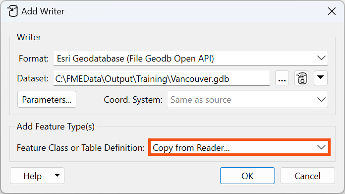
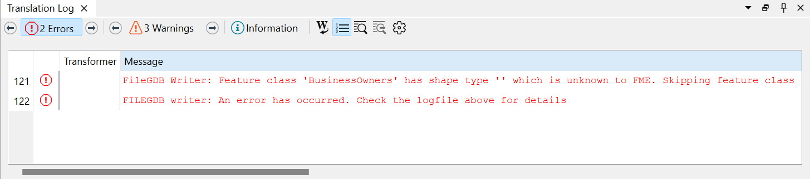
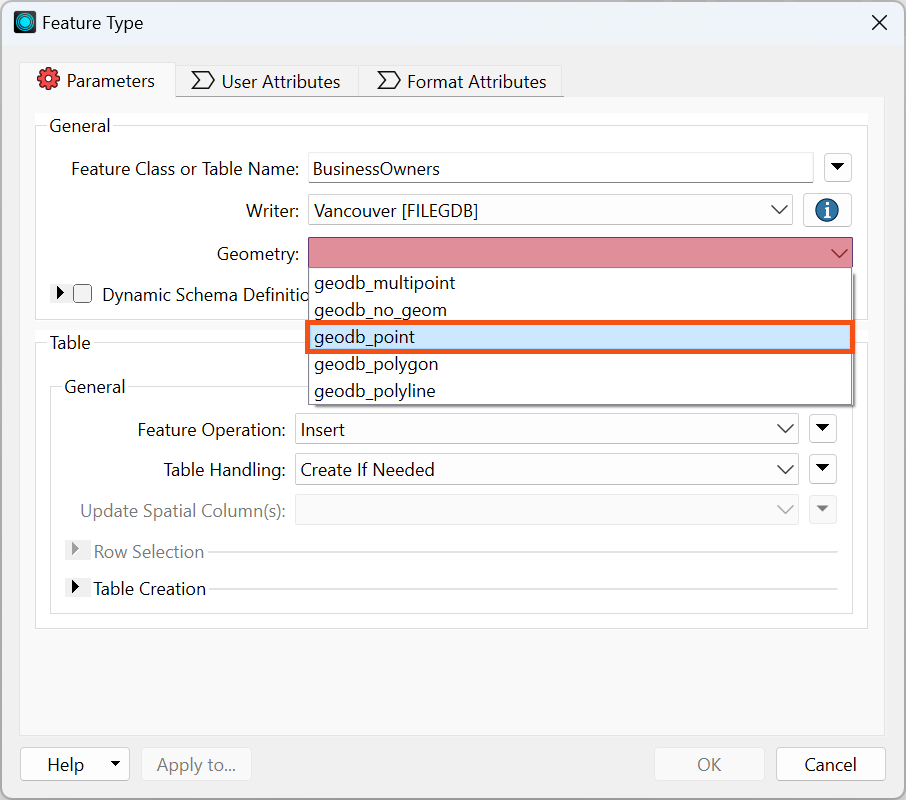

Don't forget to follow the steps described below using your copy of FME. You'll need to complete the steps to answer quiz questions.
After completing this lesson, you’ll be able to:
Don't forget to follow the steps described below using your copy of FME. You'll need to complete the steps to answer quiz questions.
Now that Sven has read his source Excel business license data, he has to add an Esri geodatabase writer to create his new dataset.
He opens the workspace he was working on in FME Workbench (2025.0 or later), which has readers for business owners and public art datasets. He needs to add an Esri geodatabase writer. He clicks on the canvas and starts typing “geodatabase.” A large number of writer formats match “geodatabase.” He clicks the Writer button to filter the list to show only writers:

FME supports many versions of Esri Geodatabases. However, many of them are only accessible to users who have Esri ArcGIS licenses. The version we are using, Esri Geodatabase (File Geodb Open API), can be used by anyone.
Sven selects the Esri Geodatabase (File Geodb Open API) writer and fills out the Add Writer dialog.
Warning: Sven carefully selects this option from the Writers section of the Quick Add dialog. It's easy to forget and accidentally select a Reader since Readers appear higher in the Quick Add search results. Ensure your dialog says Add Writer after selecting the format from Quick Add.
You can also use the Writers > Add Writer option in the menu.
Under Dataset, Sven enters the location where he wants his data to be saved. He enters “C:\FMEData\Output\Training\Vancouver.gdb”. If you click the ellipsis icon [. . .] to navigate to the path, note that Vancouver.gdb does not exist yet. That's OK! FME writers can create new datasets or edit or overwrite existing ones. In this case, the .gdb file does not exist yet, so you can type in Vancouver.gdb and click Select .gdb file to confirm this is the new path you'd like to use.
All of the source datasets Sven will be working with are within the City of Vancouver, and all of the writer feature types Sven creates with this workspace will be stored in the Vancouver.gdb file geodatabase.

The coordinate system is set as “Same as source.” This means the written data will use the coordinate system of the input data, which is LL84. This information will be stored in the geodatabase.
For readers, the Dataset parameter points to one or more datasets to read. For writers, it points to the file or folder where FME will create new data or update an existing dataset. If you want to change this after adding a reader or writer, you can do so in the Navigator.
You can use whatever path you want to write out your data; just remember your paths might differ from Sven’s if you don’t copy them exactly.
Next, Sven clicks Parameters.

The Parameters button opens the Esri Geodatabase (File Geodb Open API) Parameters dialog. Because Sven will be running this workspace often and might be changing the schema of the output data due to changing requirements, Sven checks the Overwrite Existing Database option so that the geodatabase will be overwritten each time the workspace is run.

If you don't see Overwrite Existing Geodatabase, verify that you chose Add Writer instead of Add Reader.
Sven clicks OK to accept the changes made in the dialog.
Finally, Sven needs to set Feature Class or Table Definition. This parameter is set to Automatic by default. Automatic feature types adopt the schema of any features you connect to them. This is handy for quickly building a workspace, but in this example, Sven instead wants to duplicate the schema of our BusinessOwners reader feature type.
To copy the schema from the source data, Sven changes Feature Class or Table Definition to Copy from Reader...

Sven hits OK and is then prompted to select a reader feature type from which to copy the writer feature type definitions. FME will create a writer feature type for each selected reader feature type. He clicks Select All to select all the PublicArt and BusinessOwners feature types and clicks OK.

The writer feature types are then added to the canvas.

Now, Sven needs to connect the reader and writer feature types. Sven connects the BusinessOwners reader feature type to the corresponding writer feature type by clicking the reader feature type output port (gray triangle) and dragging his cursor to the writer feature type input port (red triangle). A new connection line appears.

Sven ignores the PublicArt feature types for now. He wants to make sure the BusinessOwners feature type is working first. The workspace will still run with the PublicArt feature types disconnected. Sven then runs the workspace by clicking the Run button on the toolbar.
After the workspace finishes running, Sven notices red entries in the Translation Log, meaning it is reporting errors. Sven clicks on Errors in the Translation Log to display errors only. Here Sven sees:
FileGDB Writer: Feature class 'BusinessOwners' has shape type '' which is unknown to FME. Skipping feature class

This error occurred because the newly added BusinessOwners feature type requires a geometry type of geodb_point, but this has not been set yet. It isn’t set correctly because the log reports its geometry type as “NO_GEOMETRY.”
If you are using FME 25.1 or later, you may not encounter an error. However, there is still a problem with the workspace, so please continue to the next step to fix it.
Fatal errors cause the workspace to stop running immediately. In this case, the “A fatal error has occurred” error is caused by the first error. Fixing the geometry will resolve both errors. Errors that cause the workspace to stop running often create additional error messages as the translation fails. Resolving the cause of the first error message will often resolve the subsequent error messages.
To fix this error, Sven double-clicks on the BusinessOwners writer feature type to bring up the Feature Type dialog. He sets Geometry to “geodb_point” (the addresses are represented as points) and then clicks OK.

Not all formats are limited to a single geometry type per feature type. Most formats will support different geometry types on the same layer or feature type. However, the Esri geodatabase formats only allow a single geometry type per feature class, so this parameter must be set.
He reruns the workspace by clicking the "Run to this" icon that appears after selecting the writer feature type.

This time, the Translation Log reports no errors.
These green buttons let you conduct partial runs of your workspace. They are available whenever Feature Caching is enabled. You can access them by selecting any object and choosing from one of the available options (Run To This, Run From This, etc.).
The sections of your workpace that will run are highlighted in green. The screenshot above shows that the BusinessOwners reader feature type is not highlighted. It will not run because it has a valid (green) feature cache. If you change your workspace, the cache for affected objects will become invalid (yellow). Running using the Run button or partial runs buttons will run objects with invalid caches to update them.
For more details, see the View Data course.
Make sure you have followed along with Sven’s steps.